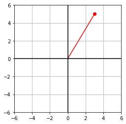
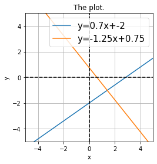
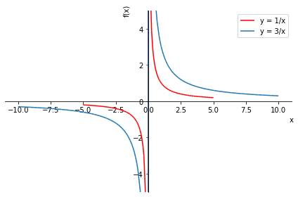
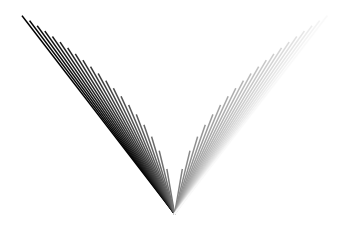

Graphing¶
# import required packages at the top of the script!
import sympy as sym
import numpy as np
from IPython.display import display, Math
import matplotlib.pyplot as plt
1 Plotting coordinates on a plane¶
x = 3
y = 5
# basic plotting a red dot
plt.plot(x,y,'ro')
# set axis limits
plt.axis('square') # order matters
plt.axis([-6,6,-6,6])
plt.grid()
plt.show()
# a set of coordinates
x = [-4,2,5,6,2,-5]
y = [5,2,10,-5,4,0]
for i in range(0,len(x)):
plt.plot(x[i],y[i],'o',label='point %s'%i)
plt.legend()
plt.axis('square')
plt.grid()
plt.show()
# getting information from axes
plt.plot(4,3,'rs')
# get an object for the current axis
axis = plt.gca()
ylim = axis.get_ylim()
print(ylim)
# now change only the upper y-axis limit
axis.set_ylim([ ylim[0],6 ])
plt.xlabel('X axis')
plt.ylabel('F(x)')
plt.show()
(2.835, 3.165)
1.1 Exercise¶
# define a function and then subs
import sympy as sym
x = sym.symbols('x')
y = x**2 - 3*x
xrange = range(-10,11)
for i in range(0,len(xrange)):
plt.plot(xrange[i],y.subs({x:xrange[i]}),'o')
plt.xlabel('x')
plt.ylabel('$f(x) = %s$' %sym.latex(y))
plt.show()

2 Graphing lines¶
# drawing lines
p1 = [-3,-1]
p2 = [4,4]
# nice try, but wrong code :(
plt.plot(p1,p2)
plt.plot([p1[0],p2[0]],[p1[1],p2[1]],color=[.7,.3,.8],linewidth=5)
plt.axis('square')
plt.axis([-6,6,-6,6])
plt.show()
x = 3
y = 5
# basic plotting a red dot
plt.plot(x,y,'ro')
plt.plot([0,x],[0,y],'r')
# set axis limits
plt.axis('square') # order matters
plt.axis([-6,6,-6,6])
plt.grid()
# now add lines
plt.plot([-6,6],[0,0],'k')
plt.plot([0,0],[-6,6],'k')
plt.show()

2.1 Exercises¶
x = range(-20,20)
for i in range(0,len(x)):
plt.plot([0,x[i]],[0,abs(x[i])**(1/2)])
plt.xlabel('x')
plt.ylabel('y')
plt.show()
# draw a square
plt.plot([0,2],[2,2],'r')
plt.plot([0,2],[0,0],'k')
plt.plot([0,0],[0,2],'g')
plt.plot([2,2],[0,2],'m')
plt.axis('square')
plt.axis([-3,5,-3,5])
plt.show()
3 Linear equations in slope-intercept form¶
# y = mx + b
x = [-5,5]
m = 2
b = 1
# next line doesn't work; solution comes later!
#y = m*x+b
# for now, this way
y = [0,0]
for i in range(0,len(x)):
y[i] = m*x[i] + b
plt.plot(x,y,label='y=%sx+%s' %(m,b))
plt.axis('square')
plt.xlim(x)
plt.ylim(x)
plt.grid()
axis = plt.gca()
plt.plot(axis.get_xlim(),[0,0],'k--')
plt.plot([0,0],axis.get_ylim(),'k--')
plt.legend()
plt.title('The plot.')
plt.show()

import numpy as np
# converting x into a numpy array
y = m*np.array(x) + b
plt.plot(x,y,label='y=%sx+%s' %(m,b))
plt.axis('square')
plt.xlim(x)
plt.ylim(x)
plt.grid()
axis = plt.gca()
plt.plot(axis.get_xlim(),[0,0],'k--')
plt.plot([0,0],axis.get_ylim(),'k--')
plt.legend()
plt.title('The plot.')
plt.show()

print(type(x))
print(type(np.array(x)))
<class 'list'>
<class 'numpy.ndarray'>
3.1 Exercise¶
# plot these two lines
import numpy as np
x = [-5,5]
m = [.7,-5/4]
b = [-2,3/4]
for i in range(0,len(x)):
y = m[i]*np.array(x) + b[i]
plt.plot(x,y,label='y=%sx+%s' %(m[i],b[i]))
plt.axis('square')
plt.xlim(x)
plt.ylim(x)
plt.grid()
plt.xlabel('x')
plt.ylabel('y')
axis = plt.gca()
plt.plot(axis.get_xlim(),[0,0],'k--')
plt.plot([0,0],axis.get_ylim(),'k--')
plt.legend(prop={'size':15})
plt.title('The plot.')
plt.show()

4 Graphing rational functions¶
import numpy as np
x = range(-3,4)
y = np.zeros(len(x))
for i in range(0,len(x)):
y[i] = 2 - x[i]**2
plt.plot(x,y,'s-')
plt.xlabel('x'), plt.ylabel('y')
plt.show()
# what if you want more spacing?
x = np.linspace(-3,4,14)
y = 2 + np.sqrt(abs(x))
plt.plot(x,y,'s-')
plt.show()
4.1 Exercise¶
import numpy as np
e = range(-1,4)
x = np.linspace(-4,4,300)
for i in e:
y = x**i
plt.plot(x,y,label='$y=x^{%s}$'%i,linewidth=4)
plt.legend()
plt.ylim([-20,20])
plt.xlim([x[0],x[-1]])
plt.xlabel('x')
plt.ylabel('y')
plt.show()
5 Plotting functions with sympy¶
# create symbolic variables
from sympy.abc import x
# define function
y = x**2
# plotting function in sympy
p = sym.plotting.plot(y) #(x,y)
# trying to adjust the y-axis limits
p.ylim = [0,50] # ...but it doesn't work :(
# to set features of the plot, turn the plotting off, then make adjustments, then show the plot
# create a plot object
p = sym.plotting.plot(y,show=False)
# change the y-axis of the entire plot
p.xlim = (0,50)
# change a feature of only the first plot object (the line, in this case there is only one)
p[0].line_color = 'm'
p.title = 'This is a nice-looking plot!'
# now show the line
p.show()
# This code shows how to use expressions with parameters
# and also how to plot multiple lines in the same plot
x,a = sym.symbols('x,a')
# a convenient way to import the plot module
import sympy.plotting.plot as symplot
# the basic expression with parameters
expr = a/x
# generate the first plot
p = symplot(expr.subs(a,1),(x,-5,5),show=False)
p[0].label = 'y = %s'%expr.subs(a,1) # create a label for the legend
# extend to show the second plot as well
p.extend( symplot(expr.subs(a,3),show=False) )
p[1].label = 'y = %s'%expr.subs(a,3)
# some plotting adjustments
p.ylim = [-5,5]
p[0].line_color = 'r'
p.legend = True # activate the legend
# and show the plot
p.show()

5.1 Exercise¶
# create variables
x,a = sym.symbols('x,a')
# define function
y = a/(x**2-a)
# reset and initialize the plot function
p = None
p = sym.plotting.plot(y.subs(a,1),(x,-5,5),show=False )
p[0].label = '$%s$'%sym.latex(y.subs(a,1))
# loop over values of a
for i in range(2,5):
p.extend( sym.plotting.plot(y.subs(a,i),(x,-5,5),show=False ) )
p[i-1].line_color = list(np.random.rand(3))
p[i-1].label = '$%s$'%sym.latex(y.subs(a,i))
# a bit of touching up and show the plot
p.ylim = [-10,10]
p.legend = True
p.show()
6 Making pictures from matrices¶
# create a matrix
A = [ [1,2],[1,4] ]
# show it (yikes! many functions!)
display(Math(sym.latex(sym.sympify(np.array(A)))))
# now image it
plt.imshow(A)
plt.xticks([0,1])
plt.yticks([.85,1])
plt.show()
\[\begin{split}\displaystyle \left[\begin{matrix}1 & 2\\1 & 4\end{matrix}\right]\end{split}\]
A = np.zeros((10,14))
print( np.shape(A) )
for i in range(0,np.shape(A)[0]):
for j in range(0,np.shape(A)[1]):
# populate the matrix
A[i,j] = 3*i-4*j
print(A)
plt.imshow(A)
plt.plot([0,3],[8,2],'r',linewidth=4)
plt.set_cmap('Purples')
for i in range(0,np.shape(A)[0]):
for j in range(0,np.shape(A)[1]):
plt.text(j,i,int(A[i,j]),horizontalalignment='center',verticalalignment='center')
plt.show()
(10, 14)
[[ 0. -4. -8. -12. -16. -20. -24. -28. -32. -36. -40. -44. -48. -52.]
[ 3. -1. -5. -9. -13. -17. -21. -25. -29. -33. -37. -41. -45. -49.]
[ 6. 2. -2. -6. -10. -14. -18. -22. -26. -30. -34. -38. -42. -46.]
[ 9. 5. 1. -3. -7. -11. -15. -19. -23. -27. -31. -35. -39. -43.]
[ 12. 8. 4. 0. -4. -8. -12. -16. -20. -24. -28. -32. -36. -40.]
[ 15. 11. 7. 3. -1. -5. -9. -13. -17. -21. -25. -29. -33. -37.]
[ 18. 14. 10. 6. 2. -2. -6. -10. -14. -18. -22. -26. -30. -34.]
[ 21. 17. 13. 9. 5. 1. -3. -7. -11. -15. -19. -23. -27. -31.]
[ 24. 20. 16. 12. 8. 4. 0. -4. -8. -12. -16. -20. -24. -28.]
[ 27. 23. 19. 15. 11. 7. 3. -1. -5. -9. -13. -17. -21. -25.]]
6.1 Exercise¶
# make a checkerboard
C = np.zeros((10,10))
for i in range(0,10):
for j in range(0,10):
C[i,j] = (-1)**(i+j)
plt.imshow(C)
plt.set_cmap('gray')
plt.tick_params(labelleft=False,labelbottom=False)
plt.show()

7 Drawing patches with polygons¶
from matplotlib.patches import Polygon
x = np.linspace(0,1,100)
y = np.array([ [1,1],[2,3],[3,1] ])
p = Polygon(y,facecolor='m',alpha=.3)
# extend with two polygons
y1 = np.array([ [2,2],[2.5,4],[3.5,1] ])
p1 = Polygon(y1,alpha=.2,edgecolor='k')
fig, ax = plt.subplots()
ax.add_patch(p1)
ax.add_patch(p)
ax.set_ylim([0,4])
ax.set_xlim([0,4])
plt.show()
x = np.linspace(-2,2,101)
f = -x**2
y = np.vstack((x,f)).T
p = Polygon(y,facecolor='g',alpha=.2,edgecolor='k')
p1 = Polygon(np.array([ [-.5,-4],[-.5,-2.5],[.5,-2.5],[.5,-4] ]),facecolor='k')
fig, ax = plt.subplots()
ax.add_patch(p)
ax.add_patch(p1)
plt.plot(x,f,'k')
plt.plot(x[[0,-1]],[-4,-4],'k')
plt.show()
8 Exporting graphics as pictures¶
C = np.zeros((10, 10))
for i in range(0, 10):
for j in range(0, 10):
C[i, j] = (-1)**(i+j)
plt.imshow(C)
plt.set_cmap('gray')
plt.tick_params(axis='both', labelleft=False, labelbottom=False)
plt.show() # make sure this line comes after, not before, the savefig function call
9 Graphing bug hunt!¶
plt.plot(3,2,'ro')
# set axis limits
plt.axis('square')
plt.axis([-6,6,-6,6])
plt.show()
# plot a line
plt.plot([0,3],[0,5])
plt.show()
import numpy as np
x = range(-3,4)
y = np.zeros(len(x))
for i in range(0,len(x)):
y[i] = 2 - x[i]**2
plt.plot(x,y,'s-')
plt.show()
# plot two lines
plt.plot([-2,3],[4,0],'b',label='line 1')
plt.plot([0,3],[-3,3],'r',label='line 2')
plt.legend()
plt.show()

randmat = np.random.randn(5,9)
# draw a line from lower-left corner to upper-right corner
plt.plot([8,0],[0,4],color=(.4,.1,.9),linewidth=5)
plt.imshow(randmat)
plt.set_cmap('Purples')
plt.show()
# plot two lines
plt.plot([-2,3],[4,0],'b',label='line1')
plt.plot([0,3],[-3,3],'r',label='line2')
plt.legend(['line 1','line 2'])
plt.show()
x = np.linspace(1,4,20)
y = x**2/(x-2)
plt.plot(x,y)
# adjust the x-axis limits according to the first and last points in x
plt.xlim(x[[0,-1]])
plt.show()
x = sym.symbols('x')
y = x**2 - 3*x
xrange = range(-10,11)
for i in range(0,len(xrange)):
plt.plot(xrange[i],y.subs(x,xrange[i]),'o')
plt.xlabel('x')
plt.ylabel('$f(x) = %s$' %sym.latex(y))
plt.show()
x = [-5,5]
m = 2
b = 1
y = m*np.array(x)+b
plt.plot(x,y)
plt.show()
x = range(-20,21)
for i in range(0,len(x)):
plt.plot([0,x[i]],[0,abs(x[i])**(1/2)],color=(i/len(x),i/len(x),i/len(x)))
plt.axis('off')
plt.show()

# draw a checkerboard with purple numbers on top
m = 8
n = 4
# initialize matrix
C = np.zeros((m,n))
# populate the matrix
for i in range(0,m):
for j in range(0,n):
C[i,j] = (-1)**(i+j)
# display some numbers
for i in range(0,m):
for j in range(0,n):
plt.text(j,i,i+j,\
horizontalalignment='center',verticalalignment='center',\
fontdict=dict(color='m'))
plt.imshow(C)
plt.set_cmap('gray')
plt.show()